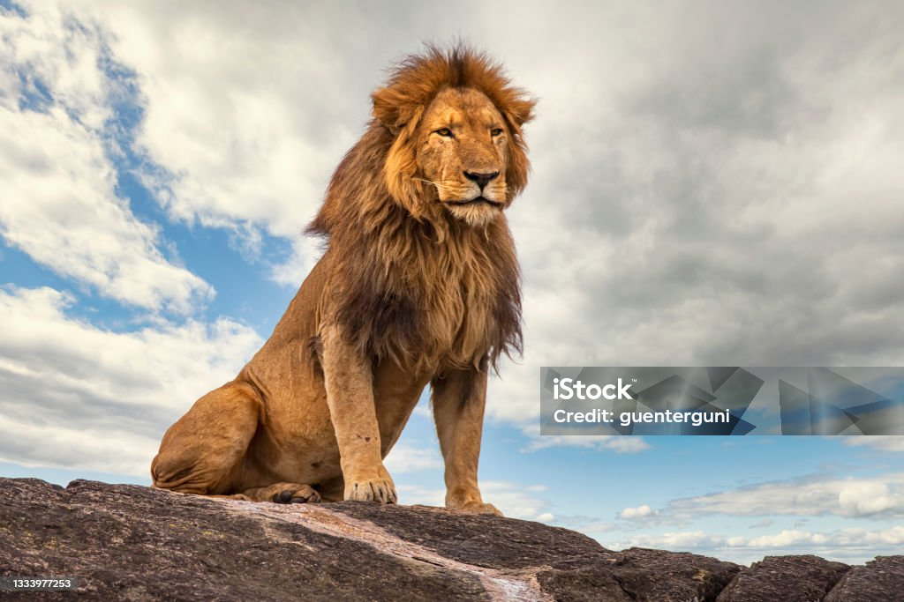

The lion (Panthera leo) is a large cat of the genus Panthera, native to Sub-Saharan Africa and India. It has a muscular, broad-chested body; a short, rounded head; round ears; and a dark, hairy tuft at the tip of its tail. It is sexually dimorphic; adult male lions are larger than females and have a prominent mane. It is a social species, forming groups called prides. A lion's pride consists of a few adult males, related females, and cubs. Groups of female lions usually hunt together, preying mostly on medium-sized and large ungulates. The lion is an apex and keystone predator. The lion inhabits grasslands, savannahs, and shrublands. It is usually more diurnal than other wild cats, but when persecuted, it adapts to being active at night and at twilight. During the Neolithic period, the lion ranged throughout Africa and Eurasia, from Southeast Europe to India, but it has been reduced to fragmented populations in sub-Saharan Africa and one population in western India. It has been listed as Vulnerable on the IUCN Red List since 1996 because populations in African countries have declined by about 43% since the early 1990s. Lion populations are untenable outside designated protected areas. Although the cause of the decline is not fully understood, habitat loss and conflicts with humans are the greatest causes for concern.
The English word lion is derived via Anglo-Norman liun from Latin leōnem (nominative: leō), which in turn was a borrowing from Ancient Greek λέων léōn. The Hebrew word לָבִיא lavi may also be related.[4] The generic name Panthera is traceable to the classical Latin word 'panthēra' and the ancient Greek word πάνθηρ 'panther'.[5]
Felis leo was the scientific name used by Carl Linnaeus in 1758, who described the lion in his work Systema Naturae.[3] The genus name Panthera was coined by Lorenz Oken in 1816.[7] Between the mid-18th and mid-20th centuries, 26 lion specimens were described and proposed as subspecies, of which 11 were recognised as valid in 2005.[1] They were distinguished mostly by the size and colour of their manes and skins.[8]
In the 19th and 20th centuries, several lion type specimens were described and proposed as subspecies, with about a dozen recognised as valid taxa until 2017.[1] Between 2008 and 2016, IUCN Red List assessors used only two subspecific names: P. l. leo for African lion populations, and P. l. persica for the Asiatic lion population.[2][9][10] In 2017, the Cat Classification Task Force of the Cat Specialist Group revised lion taxonomy, and recognises two subspecies based on results of several phylogeographic studies on lion evolution, namely:[11] P. l. leo (Linnaeus, 1758) − the nominate lion subspecies includes the Asiatic lion, the regionally extinct Barbary lion, and lion populations in West and northern parts of Central Africa.[11] Synonyms include P. l. persica (Meyer, 1826), P. l. senegalensis (Meyer, 1826), P. l. kamptzi (Matschie, 1900), and P. l. azandica (Allen, 1924).[1] It has been called 'northern lion' and 'northern subspecies'.[12][13] P. l. melanochaita (Smith, 1842) − includes the extinct Cape lion and lion populations in East and Southern African regions.[11] Synonyms include P. l. somaliensis (Noack 1891), P. l. massaica (Neumann, 1900), P. l. sabakiensis (Lönnberg, 1910), P. l. bleyenberghi (Lönnberg, 1914), P. l. roosevelti (Heller, 1914), P. l. nyanzae (Heller, 1914), P. l. hollisteri (Allen, 1924), P. l. krugeri (Roberts, 1929), P. l. vernayi (Roberts, 1948), and P. l. webbiensis (Zukowsky, 1964).[1][8] It has been referred to as 'southern subspecies' and 'southern lion'.[13] However, there seems to be some degree of overlap between both groups in northern Central Africa. DNA analysis from a more recent study indicates that Central African lions are derived from both northern and southern lions, as they cluster with P. leo leo in mtDNA-based phylogenies whereas their genomic DNA indicates a closer relationship with P. leo melanochaita.[14] Lion samples from some parts of the Ethiopian Highlands cluster genetically with those from Cameroon and Chad, while lions from other areas of Ethiopia cluster with samples from East Africa. Researchers, therefore, assume Ethiopia is a contact zone between the two subspecies.[15] Genome-wide data of a wild-born historical lion sample from Sudan showed that it clustered with P. l. leo in mtDNA-based phylogenies, but with a high affinity to P. l. melanochaita; this suggested that the taxonomic position of lions in Central Africa may require revision.[16] Fossil records Other lion subspecies or sister species to the modern lion existed in prehistoric times:[17] P. fossilis was larger than the modern lion and lived in the Middle Pleistocene. Bone fragments were excavated in caves in the United Kingdom, Germany, Italy and Czech Republic.[18][19] P. spelaea, or the cave lion, lived in Eurasia and Beringia during the Late Pleistocene. It became extinct due to climate warming or human expansion latest by 11,900 years ago.[20] Bone fragments excavated in European, North Asian, Canadian and Alaskan caves indicate that it ranged from Europe across Siberia into western Alaska.[21] It likely derived from P. fossilis,[22] and was genetically isolated and highly distinct from the modern lion in Africa and Eurasia.[23][22] It is depicted in Paleolithic cave paintings, ivory carvings, and clay busts.[24] P. atrox, or the American lion, ranged in the Americas from Canada to possibly Patagonia during the Late Pleistocene.[25] It diverged from the cave lion around 165,000 years ago.[26] Additionally, in 1938 paleontologist Paulus Deraniyagala named a subspecies P. l. sinhaleyus based on two fossils, a lower left carnassial and a damaged right lower canine tooth, both excavated from deposits in Kuruwita, Sri Lanka. He called it "narrower and more elongate" but otherwise failed to distinguish P. l. sinhaleyus from other lion subspecies. A subsequent study of felid fossils from the Kuruwita deposits in 2005 described the fossils in further detail but only assigned to them to P. leo.[27][28]
We offer affordable domestic and international flights with flexible cancellation policies. Popular routes include New York to London, Delhi to Dubai, and Sydney to Singapore. Enjoy exclusive discounts when booking round trips.
Choose from over 10,000 hotels worldwide ranging from budget stays to luxury resorts. Each hotel listing includes reviews, star ratings, and free cancellation options. Special offers available for family and group bookings.
Explore our curated travel packages including flights, hotels, and sightseeing tours. Top packages: Bali 5N/6D Honeymoon, Europe 10N/11D Explorer, Goa Weekend Getaway. Book now to enjoy early bird discounts and seasonal offers.
| Student Personal Information | |
|---|---|
| Name | Sainath Wankhede |
| Gender | Male |
| Age | 22 |
| ID Card Number | 1234 5678 1234 |
| Contact Number | 8766775336 |
| Home Address | Naik Nagar , Nanded. |
| Nationality | Indian |
| Course Name | School/College Name | Percentage/CGPA | Grade |
|---|---|---|---|
| SSC | Mahatma Phule High School | 91.20% | Distinction |
| HSC | Yeshwant Mahavidyalaya | 93.83% | Distinction |
| SSC | Sinhgad Institute Of Technology | 8.87 cgpa | Distinction |
Project Name :To-Do List App Using HTML | CSS | JS
Jan 2024 - Present
Associated with InternPe
This To-Do List App will Saved the task list. This task still present after the reloading the website or if close the website and again open the website the task will saved.
Project Name : E-Commerce Website With the help of HTML | CSS | JS
Dec 2023 - Present
Associated with InternPe
This Project Is Build using the Web Development Frontend Technologies like HTML , CSS, JS. This Second Project Which will be completed at InternPe internship. This E-Commerce Website Responsive and user friendly Designed.
Project Name : Calculator Web App Using HTML | CSS | JS
Dec 2023 - Present
Associated with InternPe
In This Project I Implement My HTML , CSS & JS Skills To Build Basic Calculator. The Calculator perform operations like Addition, Subtraction, Multiplication, Division and etc operations. This is first Project of My Web Development Journey and Really I enjoy the project based learning from this project.